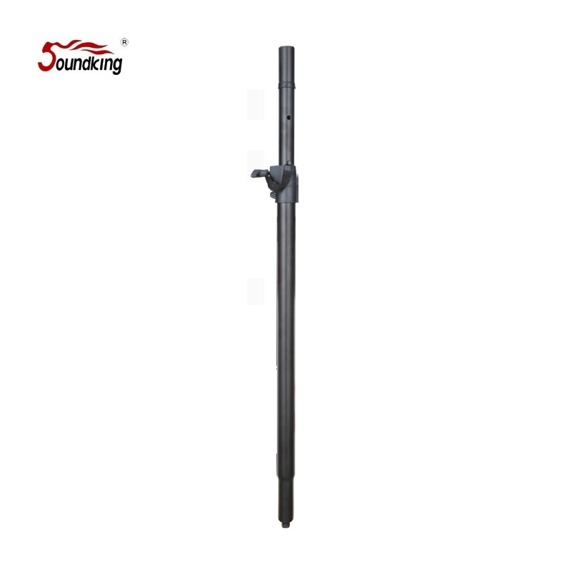

Soundking SB075는 상단 Ф35 mm · 하단 Ф35 mm(M20 외부 나사 일체형) 듀얼 어댑터를 채택한 폴마운트 스피커 스탠드입니다. 텔레스코핑 로드 상·하단에 충격 흡수 슬리브를 적용해 장비 보호성을 높였고, 블랙 매트 분체도장으로 무대 상 시각 노출을 최소화합니다. M20 나사를 통해 DC016 등 M20 트레이와 결합하여 시스템 안정성을 확장할 수 있도록 설계되었습니다.

상단 Ф35 mm · 하단 Ф35 mm/M20 외부 나사 일체형 듀얼 어댑터 구조의 폴마운트 스피커 스탠드. 양 끝 충격 흡수 슬리브와 블랙 매트 분체도장이 장비 보호성과 외관 품질을 동시에 확보합니다.
SB075는 상단에 Ф35 mm 폴 어댑터, 하단에는 Ф35 mm 외경과 M20 외부 나사가 함께 있는 듀얼 어댑터 구조를 채택했습니다. 하단의 M20 나사를 통해 Soundking DC032 · DC016 등 M20 타입 스피커 트레이와 견고하게 결합할 수 있어, 단순 폴 확장이 아닌 고정형 시스템의 한 축으로 활용할 수 있습니다.
텔레스코핑 로드 양 끝단에는 충격 흡수 슬리브(Shock-Absorbing Sleeve)가 적용되어, 수납·이동 시 발생하는 충격으로부터 어댑터 및 결합 장비를 보호합니다. 표면은 블랙 매트 분체도장(Black matte powder coating)으로 처리되어 무대 조명 하에서 반사를 최소화하고, 스크래치 및 부식에 대한 저항성이 우수합니다.
제조사 공식 카탈로그가 기재하는 SB075의 핵심 포인트입니다.
제조사 공식 카탈로그(2026년 1월판) 기재 사양입니다.
| 모델명 | SB075 |
|---|---|
| 타입 | Speaker Stand / M20 Adapter (폴마운트 어댑터) |
| Height | 810 – 1350 mm |
| Load Capacity | 45 kg |
| Material | Steel |
| Connection | 상단 외경 Ф35 mm · 하단 외경 Ф35 mm + M20 외부 나사 |
| Surface Finish | Black Matte Powder Coating |
| 특수 기능 | 상 · 하 Shock-Absorbing Sleeve · DC032 호환 설계 |
| Net Weight | 1.5 kg |
| 권장소비자가 | 66,000 원 / 조 (VAT 포함) |
※ 본 사양은 제조사 Soundking 공식 카탈로그(2026-01-29) 기재 사항을 기준으로 정리되었으며, 단가는 수입원(현대에이브이씨) 2026-01-01 스탠드 가격표 기준 권장소비자가(VAT 포함)입니다. 제조사 설계상 호환 트레이는 DC032이며, 동일한 M20 타입인 DC016과도 결합 가능합니다.
Ф35 폴마운트와 M20 트레이 시스템 양쪽을 오가는 모듈형 음향 시스템에 적합합니다.